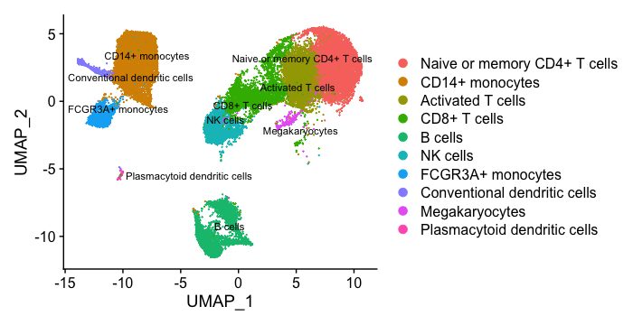
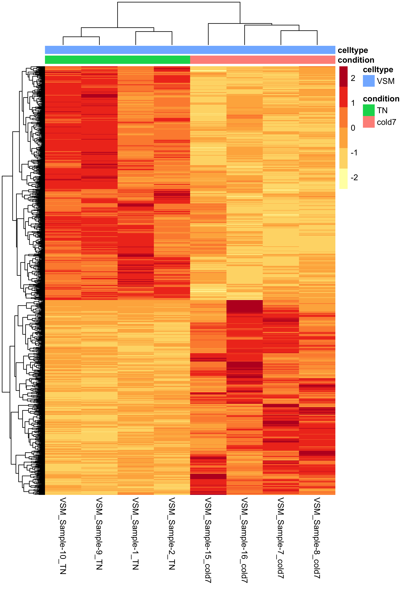

Material Development
|  |
Introduction to single-cell RNA-seqHands-on Introduction to single-cell RNA-seq workshop. This workshop will instruct participants on how to design a single-cell RNA-seq experiment, and how to efficiently manage and analyze the data starting from count matrices. This will be a hands-on workshop in which we will focus on using the Seurat package using R/RStudio. |
|  |
Pseudobulk and related approaches for scRNA-seq analysisAfter clustering cells as part of a single-cell RNA-seq experiment, investigators are often interested in carrying out a differential expression analysis between conditions within certain cell types. When the experimental design includes replicates with multiple conditions there is power in identifying differentially expressed genes using a pseudobulk approach. |
Workflows
Co-expresson workflow for scRNACalculate co-expression scores for zero-inflated single-cell datasets. |
|

|
Template for QC of scRNAJuptyer notebook template to run initial QC on scRNA datasets using scanpy. |
Data visualization

|
Tidy TuesdayTidy tuesday. |